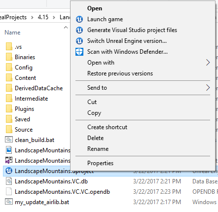

创建和设置虚幻环境#
本页包含使用 AirSim 设置虚幻环境的完整说明。虚幻商城 (Unreal Marketplace) 提供了 多个环境 ，您只需几分钟即可开始使用。您也可以使用 turbosquid.com 或 cgitrader.com 等网站上提供的环境，但需要稍加努力（点击此处观看 教程视频 ）。此外，还有几个 免费环境 可供使用。
下面我们将使用虚幻市场中可免费下载的环境，名为 Landscape Mountain，但对于其他环境，步骤都是相同的。
Linux 用户须知#
Linux 上没有 Epic Games Launcher，这意味着如果您需要创建自定义环境，则需要 Windows 设备来执行此操作。获取 Unreal 项目文件夹后，只需将其复制到您的 Linux 设备上即可。
分步说明#
- 确保已构建 AirSim 并已安装 Unreal 4.27，如 构建说明 中所述。
-
在
Epic Games Launcher中，点击“Learn”选项卡，向下滚动找到Landscape Mountains。点击Create Project并下载此内容（下载量约 2GB）。
-
打开
LandscapeMountains.uproject，它应该启动虚幻编辑器。
注意
景观山脉(Landscape Mountains)项目最高支持虚幻引擎 4.24 版本。如果您尚未安装 4.24 版本，您将看到一个名为
Select Unreal Engine Version(选择虚幻引擎版本)的对话框，其中包含一个下拉菜单，用于从已安装的版本中进行选择。选择 4.27 或更高版本，即可将项目迁移到支持的引擎版本。如果您已安装 4.24 版本，则可以手动迁移项目，方法是：在 Windows 资源管理器中导航到相应的 .uproject 文件，右键单击该文件，然后选择Switch Unreal Engine version...(切换虚幻引擎版本...)选项。 -
从
File菜单中选择New C++ class，类类型保留默认None，点击Next，保留默认名称MyClass，然后点击Create Class。我们需要这样做是因为 Unreal 要求项目中至少有一个源文件。它会触发编译并打开 Visual Studio 解决方案LandscapeMountains.sln。 -
前往你的 AirSim 仓库文件夹，将
Unreal\Plugins文件夹复制到LandscapeMountains文件夹中。这样，你的 Unreal 项目就拥有了 AirSim 插件。注意
如果 AirSim 安装是全新安装的，即之前从未构建过，请确保在复制
Unreal\Plugins文件夹之前，先从根目录运行一次build.cmd，以便AirLib文件也包含在内。如果您在 Blocks 环境中进行了某些更改，请确保从Unreal\Environments\Blocks运行update_to_git.bat来更新Unreal\Plugins中的文件。 -
编辑
LandscapeMountains.uproject，使其看起来像这样{ "FileVersion": 3, "EngineAssociation": "4.27", "Category": "Samples", "Description": "", "Modules": [ { "Name": "LandscapeMountains", "Type": "Runtime", "LoadingPhase": "Default", "AdditionalDependencies": [ "AirSim" ] } ], "TargetPlatforms": [ "MacNoEditor", "WindowsNoEditor" ], "Plugins": [ { "Name": "AirSim", "Enabled": true } ] } -
编辑
Config\DefaultGame.ini并在末尾添加以下行：+MapsToCook=(FilePath="/AirSim/AirSimAssets")这样做会强制虚幻引擎将所有必要的 AirSim 内容包含在项目的打包版本中。
-
关闭 Visual Studio 和
Unreal Editor，然后在 Windows 资源管理器中右键单击 LandscapeMountains.u 项目，并选择Generate Visual Studio Project Files。此步骤将检测虚幻项目中的所有插件和源文件，并为 Visual Studio 生成.sln文件。
提示
如果缺少
Generate Visual Studio Project Files选项，您可能需要重启计算机以使 Unreal Shell 扩展生效。如果仍然缺少此选项，请在虚幻编辑器中打开 LandscapeMountains.uproject，然后从File菜单中选择Refresh Visual Studio Project。 -
在 Visual Studio 中重新打开
LandscapeMountains.sln，并确保“DebugGame Editor”和“Win64”构建配置是活动构建配置。
-
按
F5来运行。这将启动虚幻编辑器。虚幻编辑器允许您编辑环境、资源和其他游戏相关设置。您首先需要在环境中设置PlayerStart对象。在 Landscape Mountains 环境中，PlayerStart 对象已经存在，您可以在World Outliner中找到它。确保其位置设置如图所示。AirSim 插件将在此处创建并放置车辆。如果位置过高，车辆会在您按下播放键时立即坠落，从而产生潜在的随机行为。
-
在如下所示的
Window/World Settings中，将GameMode Override设置为AirSimGameMode：
-
在虚幻编辑器中，前往“编辑->编辑器偏好设置”，在“搜索”框中输入“CPU”，并确保“在后台运行时使用较少 CPU”(Use Less CPU when in Background) 未勾选。如果不勾选，当虚幻引擎窗口失去焦点时，虚幻引擎的速度将显著下降。
-
请务必
保存这些编辑。点击虚幻编辑器中的“播放”按钮。了解 如何使用 AirSim 。
恭喜！您现在可以在自己的虚幻环境中运行 AirSim 了。
选择您的车辆：汽车或多旋翼飞行器#
默认情况下，AirSim 会提示用户选择要使用的车辆。您可以通过设置 SimMode 轻松更改此设置。请参阅 使用车辆 指南。
将您的环境更新至最新版本的 AirSim#
按照上述步骤搭建好环境后，你需要经常从 GitHub 更新本地 AirSim 代码到最新版本。具体操作步骤如下：
- 首先将 clean.bat（Linux 用户请将 clean.sh）放入环境的根文件夹中。运行此文件可以清理 虚幻引擎项目中的所有中间文件。
- 在您的 AirSim repo 中执行
git pull，然后执行build.cmd（对于 Linux 用户，执行“./build.sh”）。 - 将 [your project]/Plugins 文件夹替换为 AirSim/Unreal/Plugins 文件夹。
- 右键单击 .uproject 文件，然后选择“Generate Visual Studio project files”选项。Linux 系统无需执行此操作。
FAQ#
还有哪些很酷的环境？#
虚幻商城 拥有数十个预先构建的极其精细的 环境 ，涵盖从月球到火星等各种场景。我们用于测试的环境名为“模块化邻里包 ( Modular Neighborhood Pack )”，但您可以使用任何环境。另一个免费环境是“无尽之剑 ( Infinity Blade 系列 )”。或者，如果您在 Epic Game Launcher 的“学习 (Learn)”选项卡下查看，您会发现许多可用的免费示例。我们最喜欢的一个是“男孩和他的风筝 (A Boy and His Kite)”，这是一个 100 平方英里（约 100 平方英里）的高精度环境（注意：您需要非常强大的 PC 才能运行它！）。
当我按下播放按钮时，某种视频开始播放，而不是我的车辆。#
如果环境自带 MatineeActor，请将其删除以避免任何启动演示序列。还有其他方法可以删除它，例如，点击“蓝图”按钮，然后点击“关卡蓝图”，然后查看“事件图表”中的“开始播放”事件。您可能需要断开所有可能正在启动“matinee”的连接。
有没有简单的方法可以将我的虚幻引擎项目中的代码与 AirSim repo 中的代码同步？#
当然有！你可以在AirSim\Unreal\Environments\Blocks中找到一堆.bat文件（Linux 系统下为.sh）。只需将它们复制到你自己的虚幻引擎项目中即可。其中大多数都非常简单易懂。
我收到一些有关地图的错误。#
您可能需要为项目设置默认地图。例如，如果您使用的是模块化邻里包 (Modular Neighborhood Pack)，请在“项目设置”>“地图和模式”中将编辑器起始地图和游戏默认地图设置为“Demo_Map”。
我看到了环境的“添加到项目”选项，但没有看到“创建项目”选项。#
在这种情况下，创建一个没有 Starter Content 的新空白 C++ 项目并将您的环境添加到其中。
我已经有自己的 Unreal 项目了。如何使用 AirSim？#
将您在上一节中构建的Unreal\Plugins文件夹复制到 Unreal 项目的根目录下。在 Unreal 项目的 .uproject 文件中，将键AdditionalDependencies添加到“Modules”对象中，就像我们在上文“LandscapeMountains.uproject”中展示的那样。
"AdditionalDependencies": [
"AirSim"
]
并将Plugins部分添加到顶级对象：
"Plugins": [
{
"Name": "AirSim",
"Enabled": true
}
]